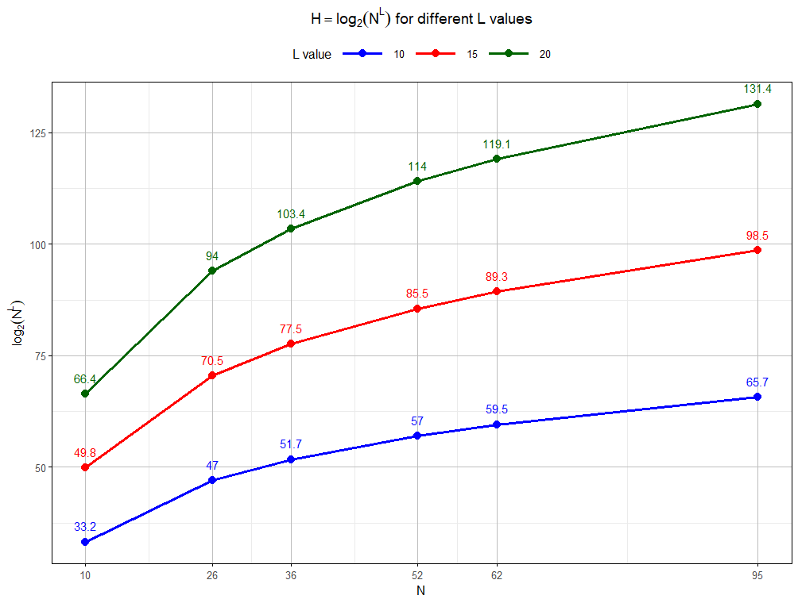

關於密碼(2) - 密碼要設成 N3v@rM1^d! 這樣嗎？
大可不必。因為你根本記不來，而且，設成這樣也沒有比較「安全」。密碼強度的關鍵在長度，不是複雜度。
人怎麼能夠記得起一長串英數混合大寫小寫外加特殊符號的十二位以上字元？更何況，所有容易記憶的標的物，諸如出生年月日、名字、連續的數字等等都被列為太容易猜到而被禁止……。那麼到最後，記不得也是萬分合理的事情。1
密碼的強度
密碼的強度（安全性）通常可以用熵值（Entropy）來衡量，2熵值越高，代表密碼越難被猜測或破解。熵值的計算公式如下：
\(H = \log_2 (N^{L})\)
其中，\(H\) 代表密碼的熵值；\(N\) 是字元集大小（Character Set Size）， 指的是密碼可能包含的字元數量。例如，只包含阿拉伯數字時為10個字元，不區分大小寫的英文字母（a–z 或者 A–Z）是26個字元，區分大小寫的字母再加上數字組合（a–z，A–Z，0–9）則為62個字元，如果包含特殊符號，也就是所有 ASCII 可列印字則為95個字元。\(L\) 指的是密碼的長度。
下圖是不同字元集和不同密碼長度的熵值。由圖得知，增加字元集\(N\)的大小雖然會增加熵值，但其影響遠不如增加密碼長度\(L\)來得顯著；例如，只用數字設定密碼（\(N=10\)），但密碼長度度為20，其熵值尚大於以所有ASCII為字元集（\(N=95\)），但長度僅為10的密碼。由此可知，密碼強度的關鍵是長度，而不是複雜度。

舉例說明：
由公式可知，熵值越高，密碼的組合數量會呈指數級增長。 假設有人以每秒\(10^{12}\) 次密碼組合（這算是相當高的速度）嘗試破解以下二種密碼組合 ：
密碼複雜度高，但長度短（例如：以 N3v@rM1^d! 為密碼，10個字元，包含大小寫、數字、特殊符號，字元集為 95）： 密碼可能的組合約 \(95^{10} \approx 5.9 \times 10^{19}\) 種， 破解時間約 \(5.9 \times 10^{19} / 10^{12}\) 秒 （約70天）。
密碼複雜度低，但長度長（例如：例如：以 fabricatenumber 為密碼，15個字元，只包含小寫字母，字元集是26）： 密碼可能的組合約 \(26^{15} \approx 1.7 \times 10^{21}\) 種，破解時間約 \(1.7 \times 10^{21} / 10^{12}\) 秒 （約52年）。
從這個例子可以清楚看出，即使只有小寫字母，但將長度從10增加到15個字元，破解所需的時間會由70天增加到52年。如果將這15個字元再加上數字組合（\(N=36\)）的話，破解時間則會更長。
務實看待密碼的風險
要求密碼包含大小寫、數字、特殊符號的複雜度規定，固然有其意義，但它郤大幅增加使用者的「記憶負擔」，這種強制性要求反而會導致使用者創建易於預測的模式化密碼，或是因為難以記憶而寫下來，從而增加風險。其次，從學理上看，增加複雜度的效果遠不如增長密碼的長度。
NIST在2017年發布的《數位身分認證指南（Digital Identity Guidelines, NIST SP 800-63B）》中 ，不僅建議取消了強制定期更換密碼的要求，同時也建議取消密碼複雜度（必須包含數字、大小寫、特殊符號）的強制要求。3取而代之的是，NIST強調密碼的長度，鼓勵使用者使用至少12-14個字元的密碼（或更長）。因此，當前的資安在實務操作上宜考量：
推廣採用長密碼： 鼓勵使用者創建更長的密碼，例如12-16個字元或更長，也就是多個單字組成的「密碼短語」（passphrase, 簡稱密語），只要夠長，也比短而複雜的密碼更安全。為了減輕記憶負擔，可以採行容易記憶的單字組合，例如，家中寵物的名字，加上特定物件的名稱；其次，想要減輕體重者，或可參考注釋1中的例子，設成 losewight5kgasap，這樣即可減輕記憶負擔，每次輸入密碼時， 還兼具勵志作用。
採行多因子驗證（MFA）：無論密碼強度多大，一旦洩漏或被竊取，密碼就失去效用。如果需要防護的標的很重要（但資產價值的認定不一定有客觀標準），可以導入MFA，為帳戶提供額外的安全層級，這樣即使密碼洩漏，沒有第二個驗證因子也難以登入。
但實務上，採行MFA也有許多操作面的困難，例如，不是所有的應用系統或服務都支援 MFA， 現行應用系統或服務可能需要調整；舊系統或特定設備（如工業控制系統）可能無法支援MFA協定，需額外開發或升級；可能導致操作繁瑣，尤其在緊急情況下影響效率；使用者行為及配合等課題（曾發生 email 系統登入採用手機作為雙因子認證，有員工聲稱其沒有手機，或主張其手機為私人所有，不願意作為公務信箱使用等情況）。 是以採行MFA需要衡平考量成本、便利性、技術適應性等課題，關鍵在於如何最小化對業務流程的干擾，根據組織規模與需求選擇合適方案。
其他還有一些措施，也有助於提升密碼的防護效果及減輕記憶負擔。例如，鼓勵使用密碼管理器， 讓使用者可以輕鬆生成和儲存複雜、唯一的長密碼，解除記憶負擔；導入監控密碼洩漏工具，利用像 Have I Been Pwned 這樣的服務，定期檢查使用的密碼是否已經被洩漏過；採行無密碼身分驗證方法， 採用無密碼驗證（如FIDO2標準）方法，或生物辨識（指紋、臉部識別）和安全令牌等，這些方法完全消除了對密碼的需求 。但以上這些措施同樣需要額外的成本，也可能會有操作面的副作用，需要組織或個人從資產價值、使用者行為、風險管理及使用者行為等更全面地考量。
注釋及參考資料
寺尾哲也，「我與我的密碼，」聯合報(2025) https://reading.udn.com/read/story/7048/8911835. [Accessed: Aug. 03, 2025]↩︎
熵值（Entropy）的概念源自於美國數學家夏農（Claude Shannon）的資訊理論（Information Theory），夏農定義了「資訊熵」來衡量一個訊息所包含的不確定性或隨機性，單位通常是位元（bits, 這是公式中對數以2為底的原因）。 當我們說一個密碼的熵值高，就表示這個密碼包含的資訊量大，其組合的可能性非常多，以至於很難被猜中或破解。所以，熵值可以看成是量化密碼「多難猜」的一個客觀指標。↩︎
NIST Special Publication 800-63B(Digital Identity Guidelines), https://pages.nist.gov/800-63-4/sp800-63b.html Accessed: 2025.07.20↩︎